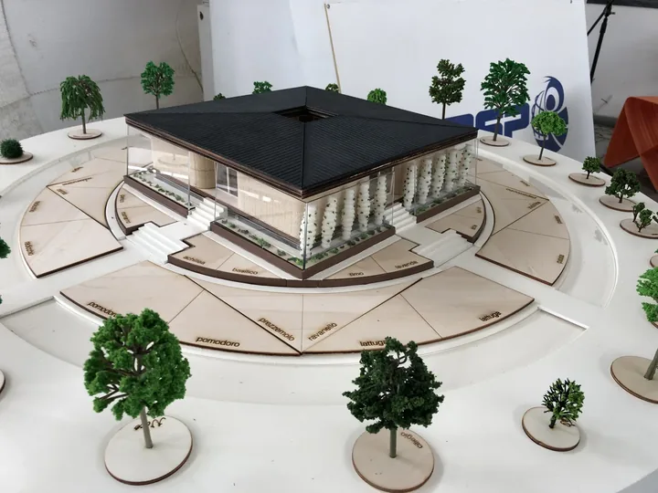
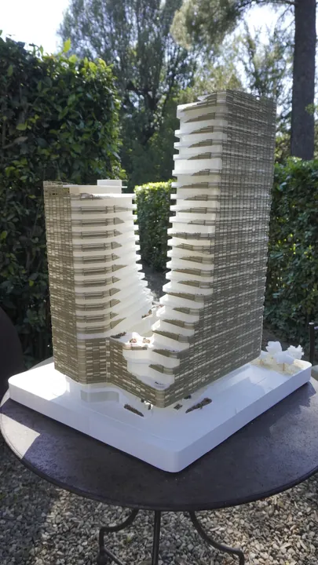
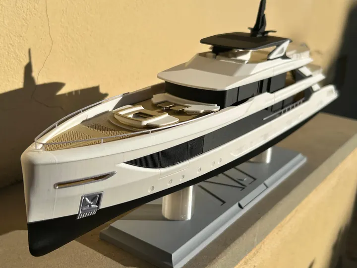
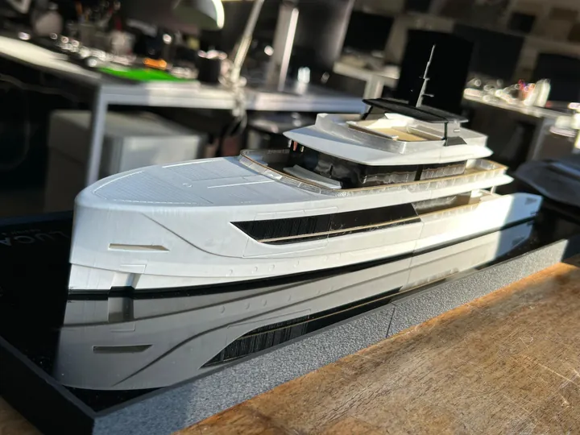
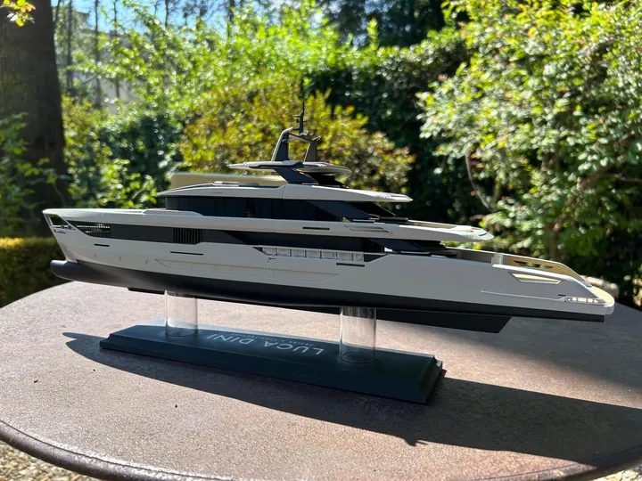
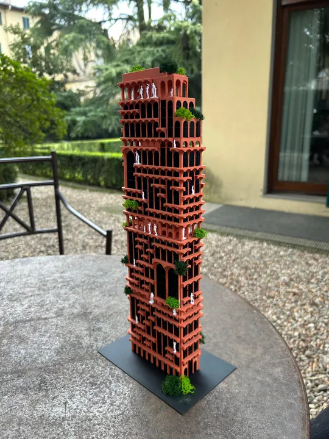
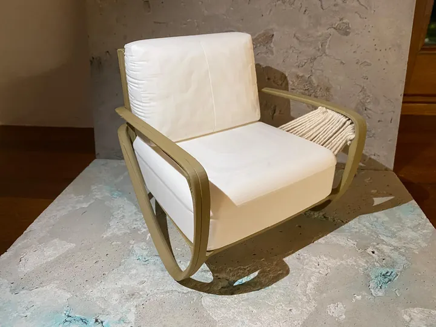
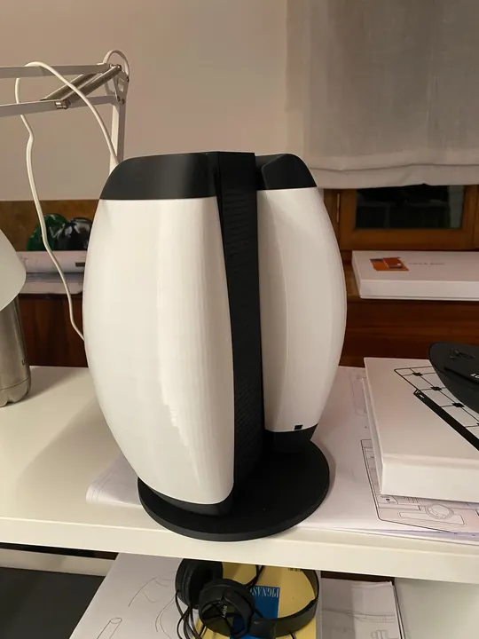
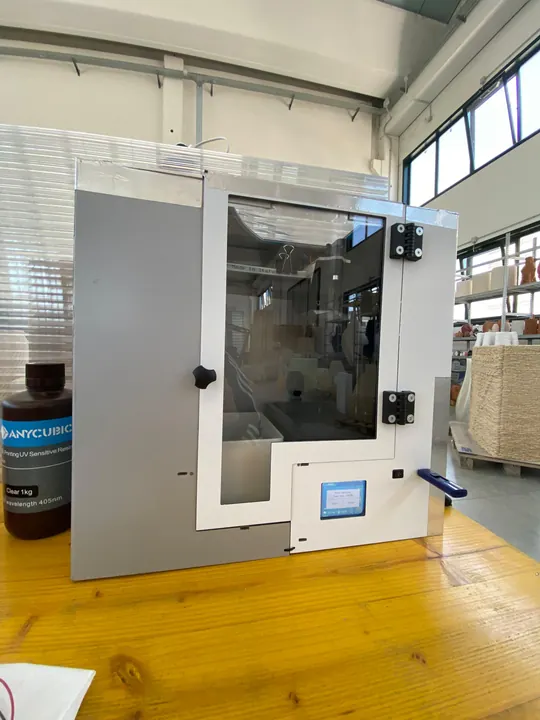
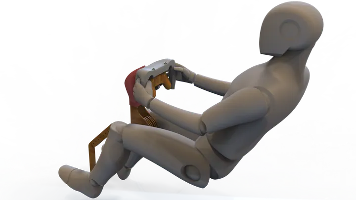

Da Firenze a Bologna
Cresciuto a Firenze, mi sono laureato prima in Design del Prodotto Industriale e poi in Advanced Design all’Alma Mater Studiorum – Università di Bologna.
Sono sempre stato affascinato dal rapporto che si crea tra le persone e gli oggetti.
Progetto da quando ho memoria: è un gesto che mi viene naturale e il modo in cui provo a dare forma allo spazio che mi circonda, soprattutto quando può migliorare l’esperienza di chi lo vive.
Esplora i progetti









Cresciuto a Firenze, mi sono laureato prima in Design del Prodotto Industriale e poi in Advanced Design all’Alma Mater Studiorum – Università di Bologna.
Mi occupo di modellazione 3D, prototipazione rapida e modellistica, seguendo le idee dal primo volume fino alla loro realizzazione.
Ho costruito questa esperienza realizzando stampe 3D per privati e collaborando con aziende del settore.
Da dieci anni lavoro con FDM, pellet, resina MSLA, LDM e SLM. Continuo a sperimentare perché ogni tecnologia, materiale e progetto porta con sé qualcosa di nuovo da imparare.
Hai un’idea da condividere?